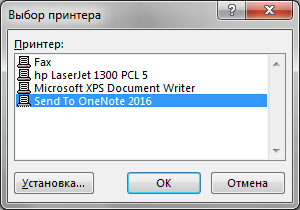
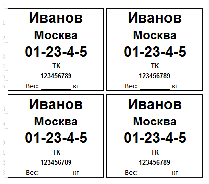

Выбор принтера (74,5 KiB, 240 скачиваний)
Выбор принтера (74,5 KiB, 240 скачиваний)Как из VBA выбрать и установить принтер для Excel
Основная задача кодов Visual Basic for Applications - автоматизация. И задачи зачастую бывают самые разные. Одна из таких задач - печать листов или ячеек по условию или в цикле. Сама по себе отправка на печать листа или диапазона не представляет сложностей, это легко можно записать макрорекордером и вставить в свой код. Выглядеть это будет примерно так:
Sub Макрос1() ActiveWindow.SelectedSheets.PrintOut Copies:=1, Collate:=True, IgnorePrintAreas:=False End Sub
|
1 2 3 |
ActiveWindow.SelectedSheets.PrintOut Copies:=1, Collate:=True, IgnorePrintAreas:=False |
Но зачастую необходимо не просто отправить на печать, а еще и на определенный принтер. При этом не просто указать другой принтер, а дать возможность выбрать принтер пользователю, не задавая его жестко в коде. Ведь у разных пользователей могут быть разные принтеры подключены. Часто такое необходимо при печати этикеток или других специфических материалов(открытки, буклеты и т.п.) потому, что для них как правило используют не стандартный офисный черно-белый лазерный принтер, а некий более продвинутый с возможностью заправки специфических листов. Как видно из кода выше - там нет и малейшего намека на указание принтера. Хотя в принципе параметр такой есть - ActivePrinter.
На самом деле есть несколько вариантов выбора принтера, но я покажу самый надежный (как оказалось) и в тоже время самый простой - через стандартный диалог выбора принтеров:
Sub ShowPrinters() Application.Dialogs(xlDialogPrinterSetup).Show End Sub
|
1 2 3 |
Этот диалог после вызова автоматически назначает выбранный в нем принтер принтером по умолчанию для печати. Т.е. теперь чтобы мы ни отправили на печать будет отправлено на этот принтер. Все бы хорошо, но тут появляется небольшая проблема: в этом случае у нас не только из кодов будет идти печать на этот принтер, но и при обычной печати. А это нам не надо, ведь тогда даже 100500 каких-то "левых" документов вместо печати на лазерном черно-белом будут распечатаны на офигительном цветном. За такое можно и премии лишиться :) Конечно, можно каждый раз перед ручной печатью выставлять нужный принтер. Но во-первых об этом можно просто забыть, а во-вторых - как только изменим один раз, нам придется перед печатью из кода опять менять принтер. Замкнутый круг и автоматизацией вообще не пахнет.
Поэтому лучше чуть-чуть все усложнить и при каждой печати из кода VBA назначать нужный принтер. Я заготовил универсальный код, который отправляет на печать либо активный лист, либо указанный диапазон ячеек именно на выбранный для печати из VBA принтер. При желании и умении код можно доработать для печати листов и диапазонов в цикле. Но основной упор сделан на выбор принтера для печати только из кода. Т.е. при первом запуске кода печати будет предложено выбрать принтер:

Если принтер будет выбран и нажата кнопка Ок, то принтер будет запомнен и сразу после этого сброшен и установлен заново тот принтер, который был изначально установлен для печати. Однако при печати из кода будет использован именно выбранный принтер, а не тот, который будет применяться при ручной печати.
Т.е. при ручной печати будет один принтер, а при печати из кода - другой.
Option Explicit 'глобальная переменная для хранения значения выбранного принтера при печати из VBA Public sNowPrinter As String '--------------------------------------------------------------------------------------- ' Procedure : ChangePrinter ' Author : The_Prist(Щербаков Дмитрий) ' Purpose : Функция выбора принтера для печати из кода VBA '--------------------------------------------------------------------------------------- Sub ChangePrinter() sNowPrinter = "Set" Dim v, s 'запоминаем текущий принтер, чтобы можно было вернуть его после выбора s = Application.ActivePrinter 'показываем окно выбора принтера v = Application.Dialogs(xlDialogPrinterSetup).Show 'если принтер был выбран - запоминаем выбор If v = True Then sNowPrinter = Application.ActivePrinter End If 'возвращаем принтер по умолчанию, чтобы стандартная печать шла на него Application.ActivePrinter = s End Sub '--------------------------------------------------------------------------------------- ' Procedure : DoPrint ' Author : The_Prist(Щербаков Дмитрий) ' Purpose : Функция печати указанного кол-ва копий указанного диапазона ячеек ' rr - ссылка на диапазон ячеек - Range("A1:B10") ' если не указан - на печать выводится весь активный лист ' lCopies - целое число, указывающее сколько копий выводить на печать ' если не указан - на печать выводится одна копия '--------------------------------------------------------------------------------------- Function DoPrint(Optional rr As Range = Nothing, Optional lCopies As Long = 1) Dim sActPrinter As String 'проверяем, установлен ли ранее принтер для печати If sNowPrinter = "" Or sNowPrinter = "Set" Then 'если нет - вызываем процедуру выбора принтера Call ChangePrinter 'если выбранный принтер не был выбран(нажали Отмена), то используем текущий If sNowPrinter = "Set" Then If MsgBox("Не выбран принтер для печати. Использовать установленный в качестве активного?", vbCritical + vbYesNo, "www.excel-vba.ru") = vbNo Then Exit Function End If sActPrinter = Application.ActivePrinter Else sActPrinter = sNowPrinter 'получаем выбранный в окне принтер End If End If If rr Is Nothing Then 'печатаем активный лист на выбранном принтере ActiveSheet.PrintOut Copies:=lCopies, ActivePrinter:=sActPrinter Else 'печатаем указанный диапазон ячеек на выбранном принтере rr.PrintOut Copies:=lCopies, ActivePrinter:=sActPrinter End If End Function
Функция ChangePrinter показывает диалог выбора принтера и назначает выбранный принтер принтером по умолчанию, запоминает выбор и отменяет его, возвращая принтер до вызова функции.
Функция DoPrint непосредственно отправляет на печать именно на выбранный принтер. Если принтер ранее не был выбран, то сначала будет вызвана функция ChangePrinter.
При этом функция DoPrint имеет два необязательных аргумента:
rr - ссылка на диапазон ячеек (например Selection для вывода на печать выделенного диапазона или Range("A1:B10") для вывода на печать конкретного диапазона, вне зависимости от того, какой выделен). Если этот аргумент не указан, то на печать выводится весь активный лист.
lCopies - целое число, указывающее сколько копий выводить на печать. Если аргумент не указан - на печать выводится одна копия.
В процедуре ниже на печать выводится выделенный диапазон с количеством печатных копий листов - 2.
Sub TestPrint() DoPrint Selection, 2 End Sub
|
1 2 3 |
Так же в функции DoPrint можно заменить ActiveSheet на конкретный лист. Например: Workbooks("Книга2.xlsx").Sheets("Лист3"). Книга Книга2.xlsx должна быть открыта и должна содержать лист с именем Лист3.
В приложенном к статье файле так же есть пример печати по очереди каждой из этикеток, расположенных в два ряда:

Хотя практичнее автоматически заполнять только один шаблон этикетки в цикле разными данными и его отправлять на печать.
Скачать пример:
Выбор принтера (74,5 KiB, 240 скачиваний)